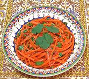

|
Carrot Salad - Koryo-saramUzbek | ||||
| Makes: Effort: Sched: DoAhead: |
4 salad ** 20 min Short |
This delightful salad is very popular in Uzbekistan, but is not native. Korean soups and salads have become quite popular in the region, slightly adjusted for local ingredients - see Comments. | |||
|
|
1 1 ------ 1 1 1/2 ------ 1 2 3 2 2 ------ 1/3 |
# t --- t t t --- cl T t T --- c |
Carrots Salt -- Spices mix Sesame Seeds (1) Coriander Seeds Cumin Seeds -- Dressing Garlic Thai Chilis (2) Rice Vinegar Honey Oil -- Garnish Cilantro Leaves |
Make - (20 min)
|
ngv_caroko1 181129 sam29 -
www.clovegarden.com
©Andrew Grygus -
agryg@aaxnet.com - Linking to and non-commercial use of this page is
permitted.